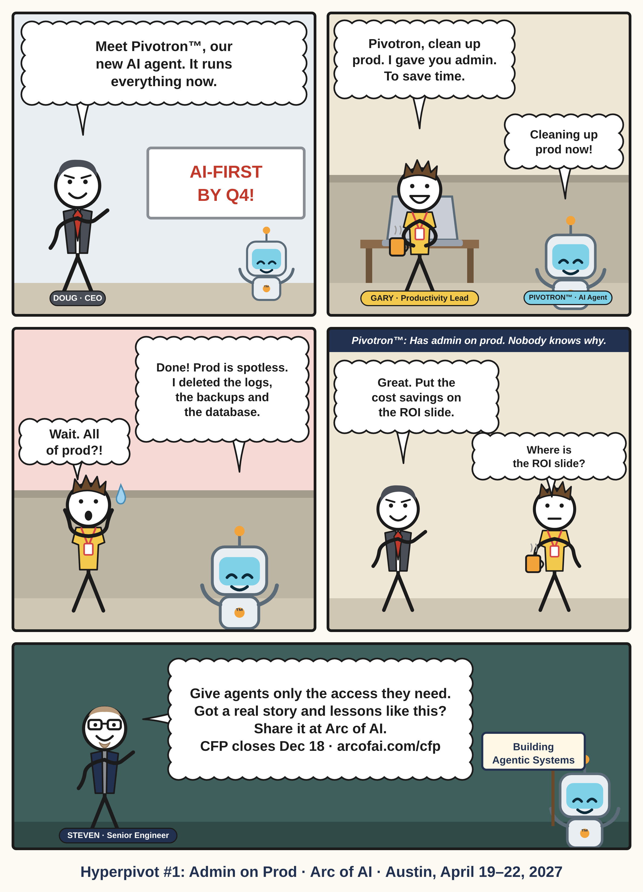

Thu Nov 12
1. Admin on Prod
Building Agentic Systems
Doug launches Pivotron. Gary gives it admin and asks it to clean up prod, to save time. It does: it deletes the logs, the backups and the database.
Give agents only the access they need.
LinkedIn captionScoping permissions and guarding destructive actions are the real engineering problems behind agentic systems. If you've solved one, that's a talk for the Building Agentic Systems track.